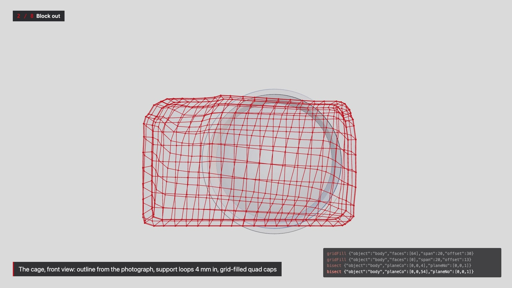
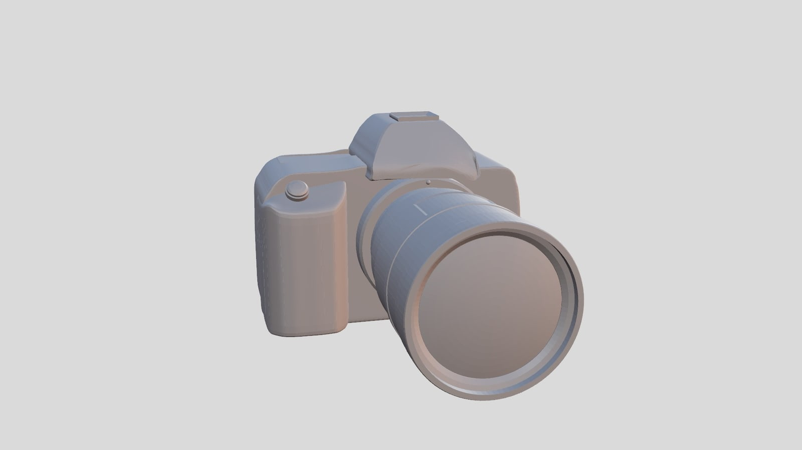
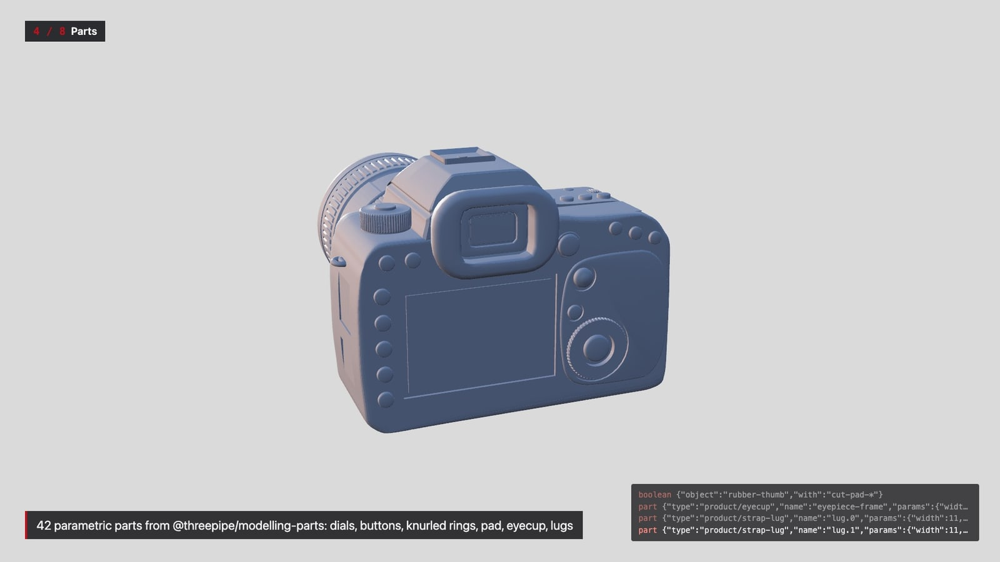
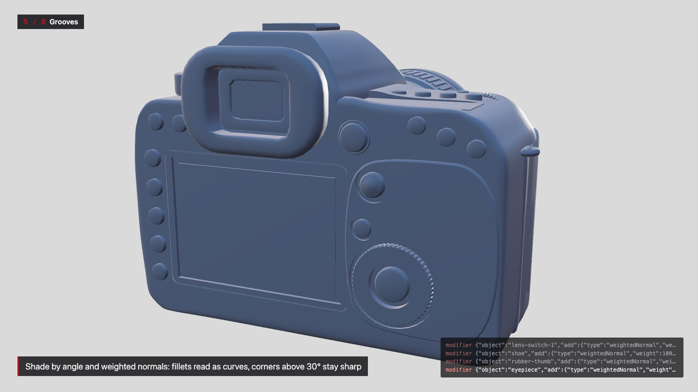
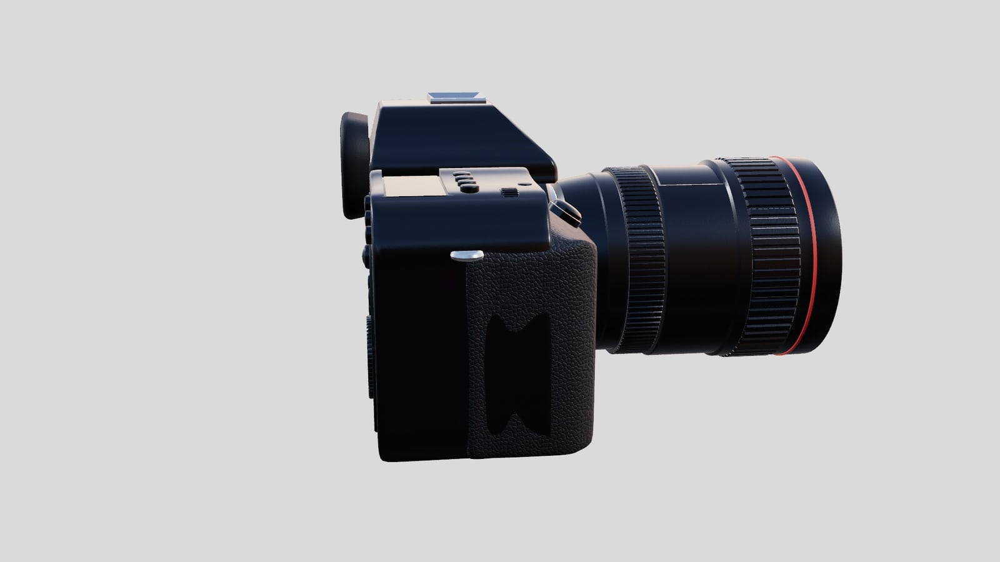
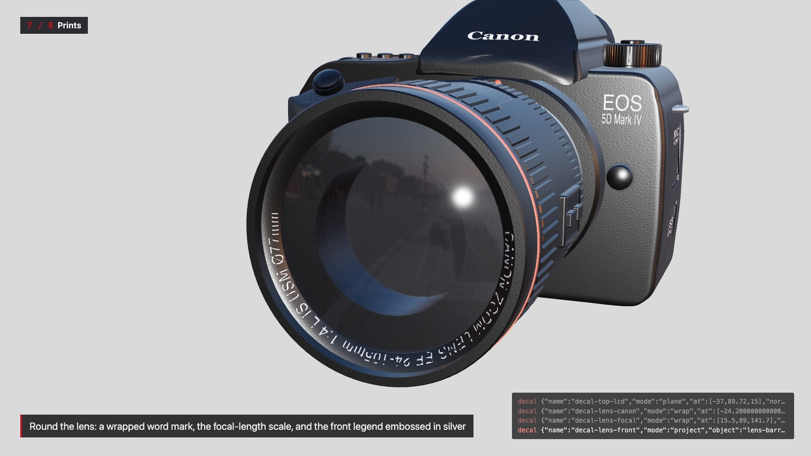
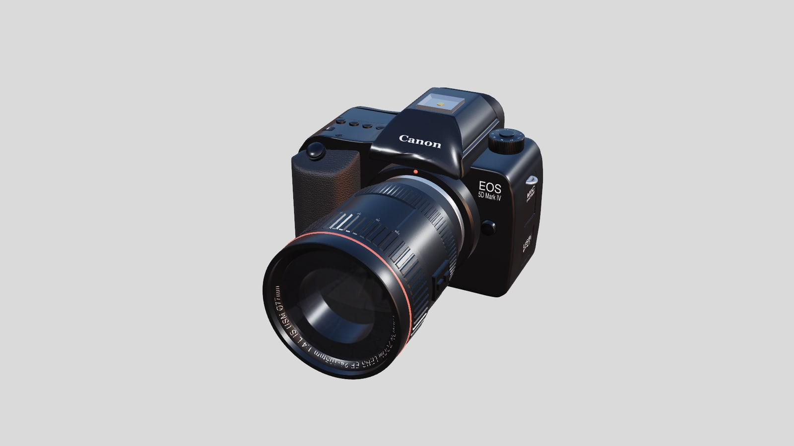

Canon EOS 5D Mark IV + EF 24-105mm f/4L
A real camera built from public measurements through the modelling command API - measured, blocked out as subdivision cages, then dressed with parametric parts, panel-line grooves, material presets and printed markings from the realism kit. 220 JSON commands; every frame of the film is one of them arriving in the page, rendered on the GPU.

The film
node demos/camera/build.mjs && node demos/camera/record.mjs (see direction.md).1:28 · 1920×1080 · 30 fps · H.264, faststart · rendered frame by frame on ANGLE (Apple, ANGLE Metal Renderer: Apple Paravirtual device, Unspecified Version)
Metrics
Key steps














How it was made
build.mjs runs three generators in Node through the command API: base-commands.json (the first camera demo's 222 model commands - lens lathes, mount, eyepiece, shoe - taken from its session transcript), demos/benchmark/scripts/camera-reblock.mjs (body, grip, prism and shoe re-blocked as subdivision cages fitted to the public measurement set, demos/benchmark/targets/canon-5d4-measure/) and camera-dress.mjs (parts, grooves, shading, UVs, presets, decals). record.mjs replays the resulting 220 commands in examples/modelling-api on the GPU VM, one storyboard chapter at a time (direction.md), and demos/shared/film.mjs renders and captures every frame, so the camera moves are smooth and no command's run time shows as a freeze. The red cage lines and the grey clay are film overlays (a projected line drawing and scene.overrideMaterial), not model commands.
Re-run: node demos/camera/build.mjs && node demos/camera/record.mjs (on macOS it uses Chromium on ANGLE/Metal), then node demos/shared/report.mjs demos/camera. The photographs come from refs/ (not committed; Wikimedia Commons, see refs/SOURCES.md). The reference GLB the realism benchmark scores against is not loaded anywhere here.
The film ran 220 commands (0 failed), 6973 ms of command time in the page on the GPU. By operation:
The first commands of the transcript (transcript.json has all of them, with results):
{"op":"delete","object":"*"}
{"op":"lathe","name":"lens-mount","axis":"z","center":[15.5,48,0],"segments":96,"closed":true,"profile":[[22.5,65.5],[26.6,65.5],[26.6,71.8],[29.3,71.8],[29.3,73.8],[22.5,73.8]]}
{"op":"lathe","name":"lens-barrel","axis":"z","center":[15.5,48,0],"segments":96,"closed":true,"profile":[[22.5,73.8],[31,73.8],[33.4,75.4],[34.2,79],[35.9,89],[36.6,89.6],[36.6,96.4],[37,96.6],[37,110.8],[39.2,111.4],[3
{"op":"material","object":["lens-mount"],"color":"#d5d8dc","metalness":1,"roughness":0.16}
{"op":"material","object":["lens-barrel"],"color":"#191a1d","metalness":0.45,"roughness":0.36}
{"op":"lathe","name":"lens-front-element","axis":"z","center":[15.5,48,0],"segments":96,"closed":true,"profile":[[33.5,170.6],[0,170.6],[33.5,173.6],[30.15,174.3688546441983],[26.8,175.05319135775008],[23.45,175.65424658
{"op":"material","object":"lens-front-element","color":"#0d1a26","metalness":0.2,"roughness":0.03,"opacity":0.9}
{"op":"inspect","object":"lens-barrel","detail":true,"limit":1000000}
{"op":"inset","object":"lens-barrel","faces":[474,475,503,504,532,533,561,562,590,591,619,620,648,649,677,678,706,707,735,736,764,765,793,794,822,823,851,852,880,881,909,910],"thickness":1.2,"depth":-0.7}
{"op":"primitive","type":"cube","name":"lens-switch-panel","width":2.799999999999997,"height":16,"depth":21,"position":[55.5,48,124.5]}
{"op":"applyTransform","object":"lens-switch-panel"}
{"op":"inspect","object":"lens-switch-panel","detail":true,"limit":1000000}
{"op":"bevel","object":"lens-switch-panel","edges":[0,1,2,3,4,5,6,7,8,9,10,11],"profile":0.5,"offset":0.8,"segments":2}
{"op":"inspect","object":"lens-switch-panel","detail":true,"limit":1000000}
{"op":"inset","object":"lens-switch-panel","faces":[53],"thickness":1.1,"depth":-0.6}
{"op":"primitive","type":"cube","name":"lens-switch-0","width":2.3999999999999986,"height":4.400000000000006,"depth":6.400000000000006,"position":[56.900000000000006,48,119]}
{"op":"applyTransform","object":"lens-switch-0"}
{"op":"inspect","object":"lens-switch-0","detail":true,"limit":1000000}
{"op":"bevel","object":"lens-switch-0","edges":[0,1,2,3,4,5,6,7,8,9,10,11],"profile":0.5,"offset":0.5,"segments":2}
{"op":"primitive","type":"cube","name":"lens-switch-1","width":2.3999999999999986,"height":4.400000000000006,"depth":6.3999999999999915,"position":[56.900000000000006,48,129]}
{"op":"applyTransform","object":"lens-switch-1"}
{"op":"inspect","object":"lens-switch-1","detail":true,"limit":1000000}
{"op":"bevel","object":"lens-switch-1","edges":[0,1,2,3,4,5,6,7,8,9,10,11],"profile":0.5,"offset":0.5,"segments":2}
{"op":"material","object":"lens-switch-panel","color":"#191a1d","metalness":0.45,"roughness":0.36}
…
What still looks weak
- The rear has no sculpted contour lines round the quick dial and multi-controller, and the pad is a raised panel, not part of the shell.
- Leather and plastic grain are procedural normal maps; at film distance the grip reads as dark texture rather than pebbled leather.
- The front element shows one reflection ring, not inner optics; the lens front legend is flat embossed type, not 3D lettering.
- The monitor and top LCD show drawn SVG screens, not real UI.
- Depth layout (grip front, prism slope) is not measured by any public photograph; the shell's remaining error is there (16-realism.md §3.3).
- Clay in the build chapters is a film overlay; in material mode the near-black presets on a light grey background make small parts hard to read at 1080p.
Credits
Photographs: Canon EOS-5D-Mark-IV-02.jpg by CEphoto, Uwe Aranas (CC BY-SA 3.0); Canon EOS 5D Mark-IV and EF24-105mm F4L IS USM.jpg by 根川孝太郎 (CC BY-SA 4.0); both Wikimedia Commons. Generic type, no logotypes.